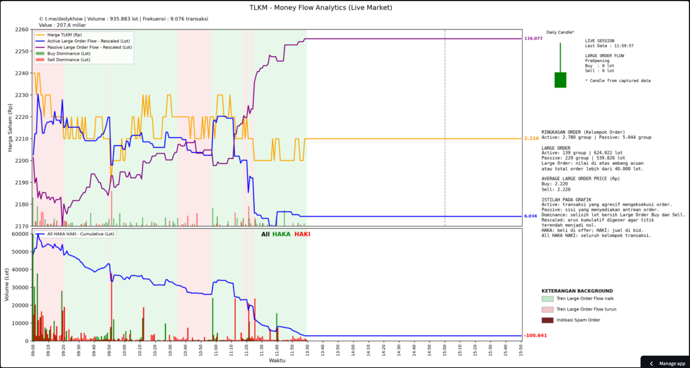
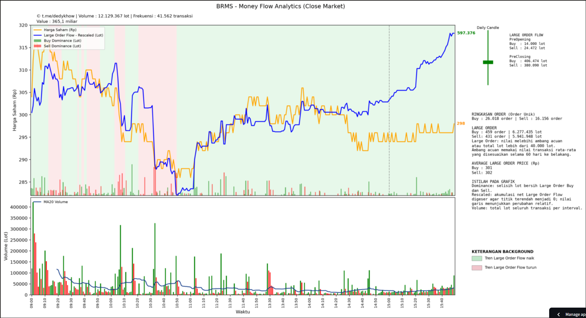
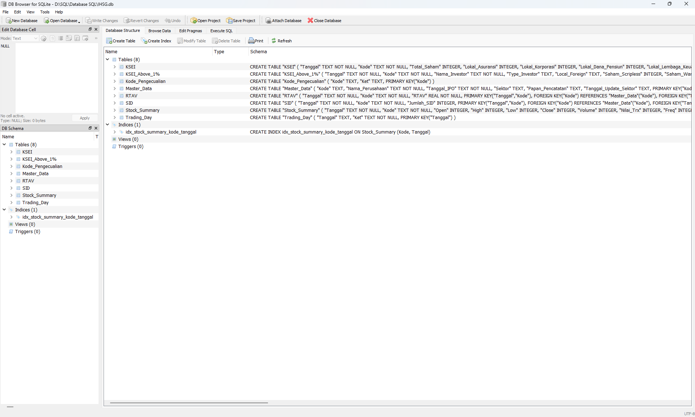
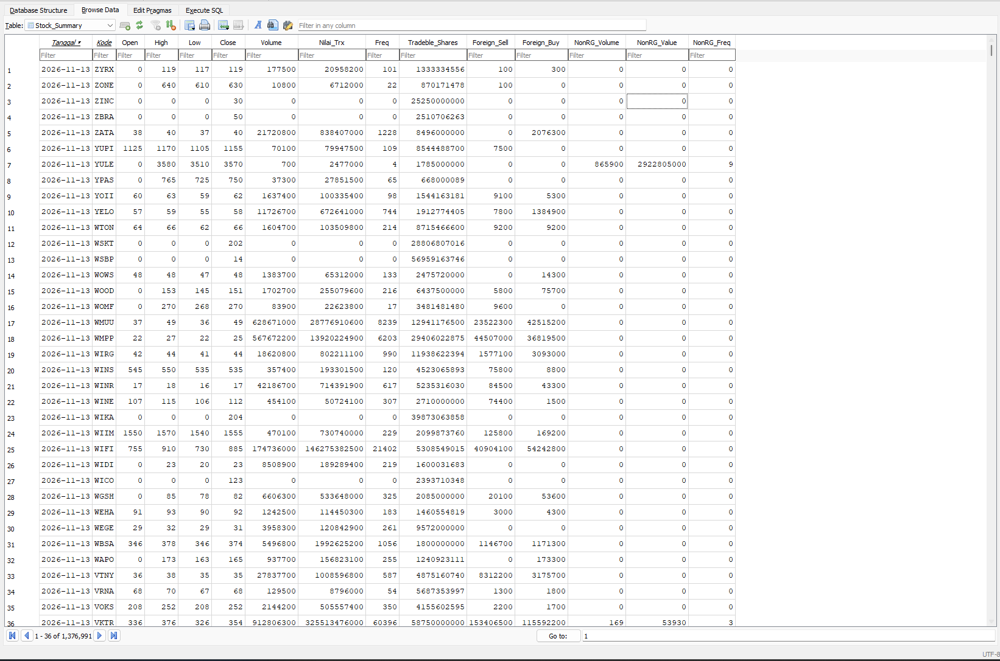

Personal Project · Proyek UtamaPython · SQLite · Streamlit
IHSG Data Pipeline & Money Flow Analytics
Membangun pipeline pengolahan data pasar saham ke SQLite dengan snapshot database historis sekitar 1,3 juta baris (±230 MB), serta mengembangkan Money Flow Analytics (MFA) untuk analisis running trade Live Market dan Close Market.
- Mengembangkan pendekatan segmentasi transaksi dan estimasi aktivitas big player dengan mempertimbangkan nilai transaksi, frekuensi, likuiditas saham, dan karakteristik broker.
- MFA memiliki mode Live Market dan Close Market serta dikembangkan sebagai modul analisis mandiri yang dapat didemonstrasikan tanpa menunggu database screener.
- Pengembangan berikutnya adalah technical stock screener untuk menyaring universe saham sebelum kandidat dianalisis lebih lanjut menggunakan MFA.



